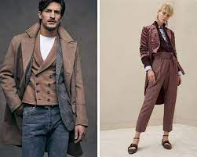

L'Italia è nota per avere una moda migliore poiché l'abbigliamento è stato realizzato con alta qualità e tempo
dedicato alla realizzazione dell'abbigliamento. Gli italiani in genere vestono in modo più formale. Agli italiani
in generale piace solo apparire eleganti e indossare bei vestiti renderebbe le persone nobili. La moda era diversa
tra Sud e Nord a causa della differenza di temperatura. Tuttavia, la moda è generalmente più formale.
